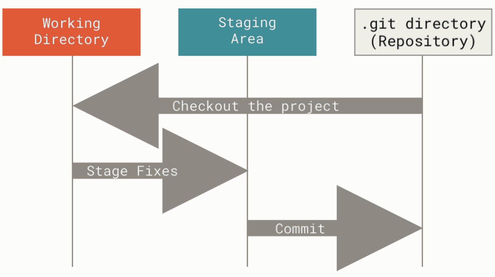
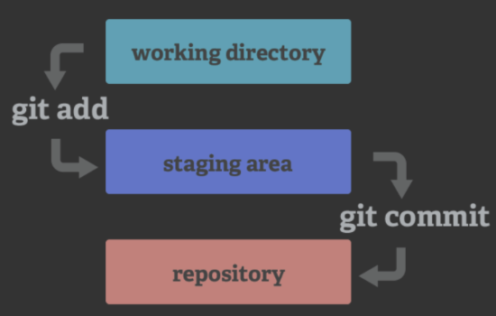

git initIntroduction
It is often difficult to keep track of all the changes to codes and files in a long-term project, especially when you have multiple collaborator. One of the best ways to target this problem is to use a proper tool (such as Git and Github) for version control so that you can record the history of modifications and roll back to a specific version whenever it is needed.
Git and Github
- Git is a version control software that is fully distributed - meaning that each project folder contains the full history of the project. These project folders are also called
repositoriesand can be on several computers, or servers. - A repository in git is the
.git/folder inside of your directory. This repository tracks all changes made to files in your project and contains your project history. Usually we refer to the git repository as the local repository. - Github is a online code hosting platform that is based on git. Here you can store, track and publish code (and code only, do NOT use github for data!). On Github you can collaborate with colleagues and work on projects together.
- A repository in github is also known as a remote directory, which stores the project and revision history in a online host.
How Git works
A git project mainly contains three sections:
- Working directory: The folder where you work with all the files in your project. All the modifications you make first happen in this directory.
- Staging area: This section declares which modification in working will be sent to
git repositoryusing command linegit add - Git repository: This is
.git/folder under your working directory, which records the modification hisotry of the git project (working directory). Note that Git repsository only retreive information from Staging area. Any change that is not decared in Staging area will not be recorded. The command to update Git repository isgit commit.
The following picture shows the relationship among these three sections:

Starting with Git
1. Initialization
To be able to use git, we need to initialize a git repository under your project/working directory:
2. Add the first record
The newly created git repository is empty, so we need to add the record of the current status of working directory into git repository.
2.1 Declaration in staging area
This step declares which file will be committed to git repository.
Note that you always need to perform this step whenever you want to update git repository.
git add --all # all files to be committed
git add [filename] # specify a file to committed2.2 Commit to git repository
Commit your staged content as a new commit snapshot.
git commit -m “[descriptive message]”3. Set up remote repository on Github
Now that we have a local history under .git/, we want to sychronize with a remote repository on Github.
3.1 Connect to Github through SSH
ssh -T git@githun.com3.2 Link local git repository to the remote one
Creating a new repository on Github is recommanded then use the following command to set up the link:
git remote add origin [URL_of_your_github_repository]Note that you need to have at least one commit in local repository before you can link with the remote repository.
3.3 Rename the branch in git repository as main
The default branch name when initialized is master, rename it as main.
git branch -M main3.4 Push local branch commits to the remote repository
- Here
mainrefers to the local branch we want to push originrefers to the name of the remote repository- use command
git branch -awe can see the remote repository has the branchremotes/origin/main, so by defaultgit pushwill push the current local branch to the remote branch with the same name.
git push -u origin main- The standard form of push command:
git push REMOTE-NAME BRANCH-NAME4. Updating repository
- Basically we follow the these steps: Staging/declaration-Commit-push.
- you don´t need to speciffy which branch to push as long as your local branch shares name with one of the remote branches
git add [filename]
git commit -m “[descriptive message]”
git push
5. Working with branches
Sometimes it is good to create a new branch (from the main branch) and make all the changes in new branch first, then merge with the main one.
5.1 List branches
git branch # show all the local branches
git branch -a # flag -a indicates also showing remote branches5.2 Create a new branch
git branch [branch_name]5.3 Switch to a branch
Switch to another branch and check it out into your working directory.
git checkout [branch_name]5.4 Merge branches
Merge the specified branch’s history into the current one.
git merge [branch_name]